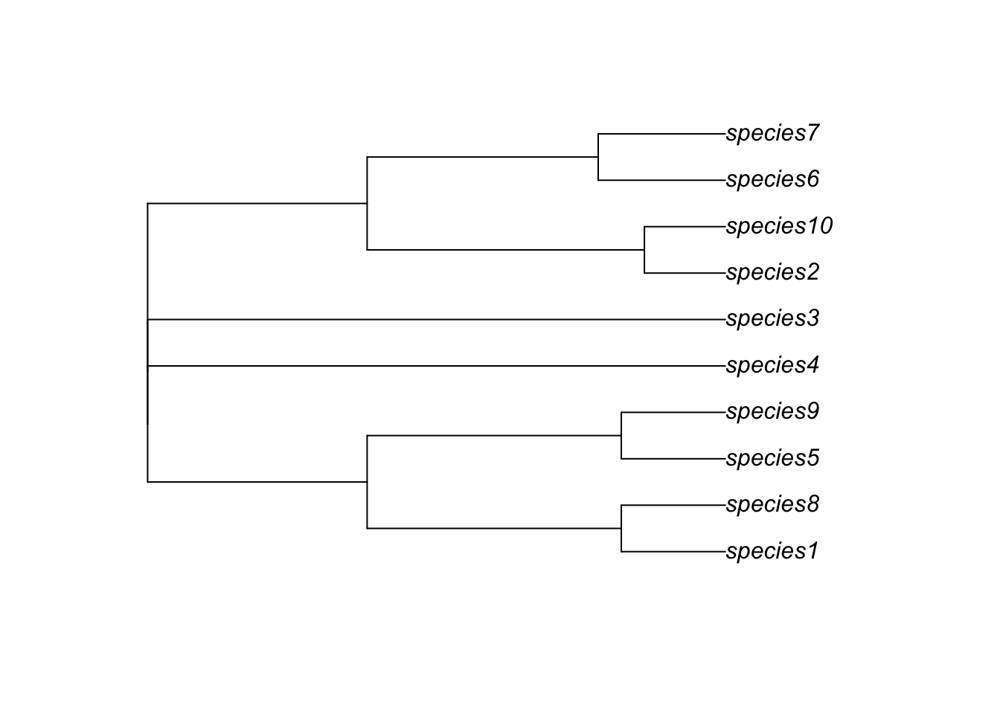
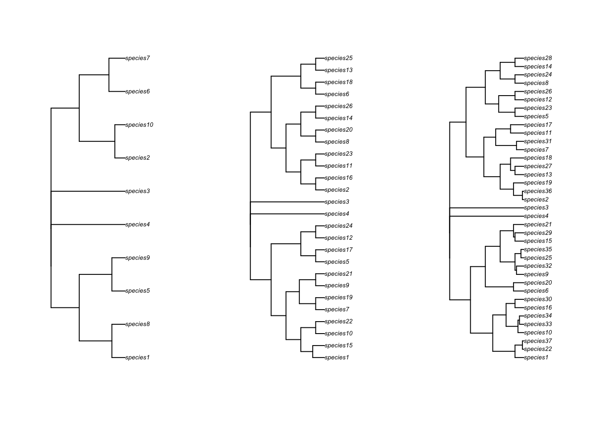
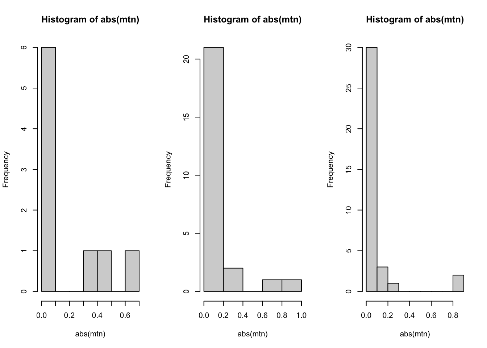

library(gen3sis)Warning: package 'gen3sis' was built under R version 4.2.3library(terra)Warning: package 'terra' was built under R version 4.2.3terra 1.7.29This practical uses a theoretical archipelago system which experiences changes in sea level, uplift, and temperature through time (Hagen et al 2024). Each site (1x1 km), features temperature (i.e. mean, minimum and maximum temperature) and has a landscape structure that is generated by approximating topography, uplift dynamics, and a lapse rate of temperature with elevation. Additionally, it incorporates global temperature and sea level changes dating back to the past 5 million years (Ma).
First make sure our packages are loaded.
library(gen3sis)Warning: package 'gen3sis' was built under R version 4.2.3library(terra)Warning: package 'terra' was built under R version 4.2.3terra 1.7.29You can look at an animation of the landscape here. We’ll also have a quick look now.
# load landscapes
lc <- readRDS(file.path("data", "landscapes", "islands","landscapes.rds"))
# get names of landscape variables
names(lc)[1] "elevation" "mean_temp" "min_temp" "max_temp" "patch" # get first time step
first_step_pos <- ncol(lc$mean_temp)
# get first 10 sites of mean temperature for the 2 last time steps and the first (oldest) time step
lc$mean_temp[100:110, c(1:4, first_step_pos)] x y 0 1 500
100 39.5 58.5 NA NA NA
101 40.5 58.5 NA NA NA
102 41.5 58.5 NA NA NA
103 42.5 58.5 NA NA NA
104 43.5 58.5 NA NA NA
105 44.5 58.5 NA NA NA
106 45.5 58.5 NA NA NA
107 46.5 58.5 NA NA NA
108 47.5 58.5 NA 23.82152 NA
109 48.5 58.5 NA 23.56207 NA
110 49.5 58.5 24.89379 23.39746 24.85717# plot mean_temp for first and last time step
plot(rast(lc$mean_temp[ ,c(1:3, first_step_pos)]))
Look to see if there are any temporal trends in temperature or elevation.
par(mfrow=c(1,2))
# plot the change in mean tempereature through time
mean_temperatures <- colMeans(lc$mean_temp[, 3:ncol(lc$mean_temp)], na.rm=T)
plot(seq(from=0, to = -5, by=-0.01),mean_temperatures , xlab="time (Ma)", ylab="mean temperature", type='l')
# plot the change in mean elevation through time
mean_elevation <- colMeans(lc$elevation[, 3:ncol(lc$elevation)], na.rm=T)
plot(seq(from=0, to = -5, by=-0.01), mean_elevation, xlab="time (Ma)", ylab="mean elevation", type='l')
load in a the m1 config
# load config
conf_m1 <- create_input_config("configs/config_islands_simple_Day1Prac3_M1.R")
# list all main elements of the config file
names(conf_m1$gen3sis)[1] "general" "initialization" "dispersal" "speciation"
[5] "mutation" "ecology" # list all elements of the general section, i.e. the main settings and not so much on the eco-evolutionary processes
names(conf_m1$gen3sis$general)[1] "random_seed" "start_time"
[3] "end_time" "max_number_of_species"
[5] "max_number_of_coexisting_species" "end_of_timestep_observer"
[7] "trait_names" "environmental_ranges"
[9] "verbose" # if you're game take a look at the whole thing - whats different to the South America example?
conf_m1$gen3sis
$gen3sis$general
$gen3sis$general$random_seed
[1] 666
$gen3sis$general$start_time
[1] 50
$gen3sis$general$end_time
[1] NA
$gen3sis$general$max_number_of_species
[1] 50000
$gen3sis$general$max_number_of_coexisting_species
[1] 20000
$gen3sis$general$end_of_timestep_observer
function (data, vars, config)
{
save_species()
}
<environment: 0x00000251ba8f2288>
$gen3sis$general$trait_names
[1] "dispersal" "temp_mean" "temp_width" "start_island"
$gen3sis$general$environmental_ranges
list()
$gen3sis$general$verbose
[1] FALSE
$gen3sis$initialization
$gen3sis$initialization$initial_abundance
[1] 1
$gen3sis$initialization$create_ancestor_species
function (landscape, config)
{
co <- landscape$coordinates
sp1 <- co[which(co[, 1] < 20 & co[, 2] < 30), ]
sp2 <- co[which(co[, 1] > 20 & co[, 2] < 30), ]
sp3 <- co[which(co[, 1] < 20 & co[, 2] > 30), ]
sp4 <- co[which(co[, 1] > 20 & co[, 2] > 30), ]
species_coords <- list(sp1, sp2, sp3, sp4)
new_species <- list()
new_species[[1]] <- create_species(rownames(species_coords[[1]]),
config)
new_species[[1]]$traits[, "dispersal"] <- 5
new_species[[1]]$traits[, "temp_mean"] <- mean(landscape$environment[rownames(species_coords[[1]]),
"mean_temp"])
new_species[[1]]$traits[, "temp_width"] <- 1
new_species[[1]]$traits[, "start_island"] <- unique(landscape$environment[rownames(species_coords[[1]]),
"patch"])
new_species[[2]] <- create_species(rownames(species_coords[[2]]),
config)
new_species[[2]]$traits[, "dispersal"] <- 5
new_species[[2]]$traits[, "temp_mean"] <- mean(landscape$environment[rownames(species_coords[[2]]),
"mean_temp"])
new_species[[2]]$traits[, "temp_width"] <- 1
new_species[[2]]$traits[, "start_island"] <- unique(landscape$environment[rownames(species_coords[[2]]),
"patch"])
new_species[[3]] <- create_species(rownames(species_coords[[3]]),
config)
new_species[[3]]$traits[, "dispersal"] <- 5
new_species[[3]]$traits[, "temp_mean"] <- mean(landscape$environment[rownames(species_coords[[3]]),
"mean_temp"])
new_species[[3]]$traits[, "temp_width"] <- 1
new_species[[3]]$traits[, "start_island"] <- unique(landscape$environment[rownames(species_coords[[3]]),
"patch"])
new_species[[4]] <- create_species(rownames(species_coords[[4]]),
config)
new_species[[4]]$traits[, "dispersal"] <- 5
new_species[[4]]$traits[, "temp_mean"] <- mean(landscape$environment[rownames(species_coords[[4]]),
"mean_temp"])
new_species[[4]]$traits[, "temp_width"] <- 1
new_species[[4]]$traits[, "start_island"] <- unique(landscape$environment[rownames(species_coords[[4]]),
"patch"])
return(new_species)
}
<environment: 0x00000251ba8f2288>
$gen3sis$dispersal
$gen3sis$dispersal$max_dispersal
[1] Inf
$gen3sis$dispersal$get_dispersal_values
function (n, species, landscape, config)
{
values <- rexp(n, rate = 1/species$traits[, "dispersal"])
return(values)
}
<environment: 0x00000251ba8f2288>
$gen3sis$speciation
$gen3sis$speciation$divergence_threshold
[1] 10
$gen3sis$speciation$get_divergence_factor
function (species, cluster_indices, landscape, config)
{
return(1)
}
<environment: 0x00000251ba8f2288>
$gen3sis$mutation
$gen3sis$mutation$apply_evolution
function (species, cluster_indices, landscape, config)
{
trait_evolutionary_power <- 0.01
traits <- species[["traits"]]
cells <- rownames(traits)
trn <- config$gen3sis$general$trait_names
for (cluster_index in unique(cluster_indices)) {
cells_cluster <- cells[which(cluster_indices == cluster_index)]
mean_abd <- mean(species$abundance[cells_cluster])
weight_abd <- species$abundance[cells_cluster]/mean_abd
for (ti in trn) {
traits[cells_cluster, ti] <- mean(traits[cells_cluster,
ti] * weight_abd)
}
}
mutation_deltas <- rnorm(length(traits[, ti]), mean = 0,
sd = trait_evolutionary_power)
traits[, "temp_mean"] <- traits[, "temp_mean"] + mutation_deltas
return(traits)
}
<environment: 0x00000251ba8f2288>
$gen3sis$ecology
$gen3sis$ecology$apply_ecology
function (abundance, traits, landscape, config)
{
diff <- abs(traits[, "temp_mean"] - landscape[, "mean_temp"])
abundance[diff > traits[, "temp_width"]] <- 0
abundance[diff <= traits[, "temp_width"]] <- 1
return(abundance)
}
<environment: 0x00000251ba8f2288>
$user
list()
$directories
list()
attr(,"class")
[1] "gen3sis_config"Ok now run the sim. Note that we’re usinga start time of 50 with 100-thousand-year time steps. So only the last 500 thousand years rather than the full 5 million. This is because
# run simulation
sim_m1 <- run_simulation(config = "configs/config_islands_simple_Day1Prac3_M1.R",
landscape = "data/landscapes/islands",
output_directory = "output/islands")Investigate the output
sim_m1 <- readRDS("output/islands/config_islands_simple_Day1Prac3_M1/sgen3sis.rds")# visualize the outputs
plot_summary(sim_m1)
# plot richness from summary in custom fashion
na_mask <- is.na(lc$elevation[,"0"])
rich_m1 <- sim_m1$summary$`richness-final`
rich_m1[na_mask,3] <- NA
plot(rast(rich_m1, type="xyz"), main="Richness")
Pick a couple of random time points to look at specifically.
# plot richness at time step 32 using saved data
sps32 <- readRDS("output/islands/config_islands_simple_Day1Prac3_M1/species/species_t_32.rds")
lc32 <- readRDS("output/islands/config_islands_simple_Day1Prac3_M1/landscapes/landscape_t_32.rds")
plot_richness(sps32, lc32)
# plot richness at time step 12 using saved data
sps12 <- readRDS("output/islands/config_islands_simple_Day1Prac3_M1/species/species_t_12.rds")
lc12 <- readRDS("output/islands/config_islands_simple_Day1Prac3_M1/landscapes/landscape_t_12.rds")
plot_richness(sps12, lc12)
Now look at the phylogeny
# Now lets look at the Phylogeny
library(ape)
Attaching package: 'ape'The following objects are masked from 'package:terra':
rotate, trans, zoomphy_m1 <- read.nexus("output/islands/config_islands_simple_Day1Prac3_M1/phy.nex")
plot(phy_m1)
Lets start changing features of the config and compare the outputs to our first model.
# load in config M2
conf_m2 <- create_input_config("configs/config_islands_simple_Day1Prac3_M2.R")
# previously, in M1, populations need 10 time steps to complete speciation
conf_m1$gen3sis$speciation$divergence_threshold[1] 10# now populations only need 5 time steps to complete speciation
conf_m2$gen3sis$speciation$divergence_threshold[1] 5#We have also change the observer function to save the presence/absence matrix for each time step.
# see original config
conf_m1$gen3sis$general$end_of_timestep_observer function (data, vars, config)
{
save_species()
}
<environment: 0x00000251ba8f2288># see modeified config
conf_m2$gen3sis$general$end_of_timestep_observer function (data, vars, config)
{
save_species()
}
<environment: 0x00000251cf43fe80>Run M2!
# run the new model
sim_m2 <- run_simulation(config="configs/config_islands_simple_Day1Prac3_M2.R", landscape="data/landscapes/islands", output_directory="output/islands")# original dynamics
plot_summary(sim_m1)
# modified dynamics
sim_m2 <- readRDS("output/islands/config_islands_simple_Day1Prac3_M2/sgen3sis.rds")
plot_summary(sim_m2)
The differences between M1 and M2 are predictable. Speciation happens a bit faster in M2, and you end up with more species. Overall, however, the patterns of richness are pretty similar. This suggests that this change in the rate of speciation isn’t having a big impact on geographic variation in where species are forming (at least from a glance). So let’s try a new model that has a few more tweaks to see a more measurable effect.
#load in the config for model M3
conf_m3 <- create_input_config("configs/config_islands_simple_Day1Prac3_M3.R")
# take a look at the initialisation
conf_m3$gen3sis$initialization$initial_abundance
[1] 1
$create_ancestor_species
function (landscape, config)
{
co <- landscape$coordinates
sp1 <- co[which(co[, 1] > 20 & co[, 2] > 30), ]
sp2 <- co[which(co[, 1] < 20 & co[, 2] < 30), ]
sp3 <- co[which(co[, 1] > 20 & co[, 2] < 30), ]
sp4 <- co[which(co[, 1] < 20 & co[, 2] > 30), ]
species_coords <- list(sp1, sp2, sp3, sp4)
new_species <- list()
new_species[[1]] <- create_species(rownames(species_coords[[1]]),
config)
new_species[[1]]$traits[, "dispersal"] <- 10
new_species[[1]]$traits[, "temp_mean"] <- mean(landscape$environment[rownames(species_coords[[1]]),
"mean_temp"])
new_species[[1]]$traits[, "temp_width"] <- 0.5
new_species[[1]]$traits[, "start_island"] <- unique(landscape$environment[rownames(species_coords[[1]]),
"patch"])
new_species[[2]] <- create_species(rownames(species_coords[[2]]),
config)
new_species[[2]]$traits[, "dispersal"] <- 7.5
new_species[[2]]$traits[, "temp_mean"] <- mean(landscape$environment[rownames(species_coords[[2]]),
"mean_temp"])
new_species[[2]]$traits[, "temp_width"] <- 1
new_species[[2]]$traits[, "start_island"] <- unique(landscape$environment[rownames(species_coords[[2]]),
"patch"])
new_species[[3]] <- create_species(rownames(species_coords[[3]]),
config)
new_species[[3]]$traits[, "dispersal"] <- 5
new_species[[3]]$traits[, "temp_mean"] <- mean(landscape$environment[rownames(species_coords[[3]]),
"mean_temp"])
new_species[[3]]$traits[, "temp_width"] <- 2
new_species[[3]]$traits[, "start_island"] <- unique(landscape$environment[rownames(species_coords[[3]]),
"patch"])
new_species[[4]] <- create_species(rownames(species_coords[[4]]),
config)
new_species[[4]]$traits[, "dispersal"] <- 2.5
new_species[[4]]$traits[, "temp_mean"] <- mean(landscape$environment[rownames(species_coords[[4]]),
"mean_temp"])
new_species[[4]]$traits[, "temp_width"] <- 4
new_species[[4]]$traits[, "start_island"] <- unique(landscape$environment[rownames(species_coords[[4]]),
"patch"])
return(new_species)
}
<environment: 0x00000251c190f288>There is a big differences here. In the initialization stage we give each species a different value of it’s dispersal ability and temperature width trait (niche breadth), and these are inversely related - high dispersing species have narrow niche breadths and low dispering species have wide niche breadths. This may create an interesting trade-off in dynamics of island colonization.
Run the simulation
sim_m3 <- run_simulation(config="configs/config_islands_simple_Day1Prac3_M3.R",
landscape="data/landscapes/islands",
output_directory="output/islands")Now compare the dynamics
sim_m3 <- readRDS("output/islands/config_islands_simple_Day1Prac3_M3/sgen3sis.rds")
# compare the plot summaries
plot_summary(sim_m1)
plot_summary(sim_m2)
plot_summary(sim_m3)
# lets also compare the phylogenies
par(mfrow=c(1,3))
phy_m1 <- read.nexus("output/islands/config_islands_simple_Day1Prac3_M1/phy.nex")
plot(phy_m1)
phy_m2 <- read.nexus("output/islands/config_islands_simple_Day1Prac3_M2/phy.nex")
plot(phy_m2)
phy_m3 <- read.nexus("output/islands/config_islands_simple_Day1Prac3_M3/phy.nex")
plot(phy_m3)
From the small tweak to the divergence factor and the initial conditions, we can see more species being generated in M2 and M3 compared to M1. We can also see extremely asymmetrical trees.
Review the M2 and M3 config files and try to understand what they’re doing.
How are the dynamics through time in M2 and M3 different to M1, and how are they similar?
Are the original occupants of each island diversifying at the same pace? How could you test this?
Consider how you might modify the configuration or apply it to a specific research question.
Do you think all islands would have similar degrees of phylogenetic diversity or turnover?
We’ll explore some of these questions tomorrow!
If you’ve managed to get thorugh all of this, run M4 config and using what you’ve learned, plot some of the outputs. What has changed about this config?
sim_m4 <- run_simulation(config="configs/config_islands_simple_Day1Prac3_M4.R", landscape="data/landscapes/islands", output_directory="output/islands"){kind=link}